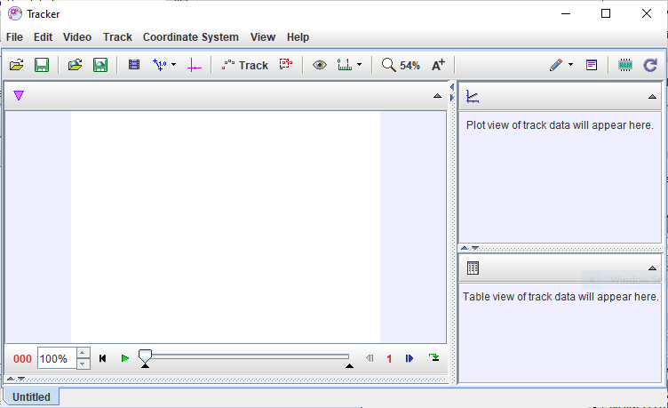
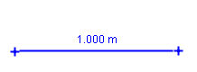
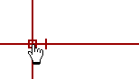
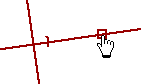
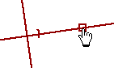
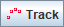
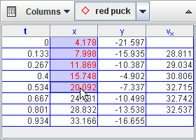
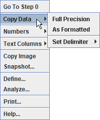

Pa
začnimo
Ko prvič odpremo
Tracker, se pojavi naslednji zaslon. Analizo videa začnemo tako:

Vrstni
red gumbov v orodni vrstici zrcali korake, potrebne za analizo videa.
Več informacij o uporabniškem vmesniku programa Tracker, vključno o
njegovem prilagajanju najdemo v poglavju Uporabniški vmesnik.
1. Odpremo
video ali tracker datoteko
Kliknemo
na gumb Odpri ali na postavko v
menuju Datoteka|Odpri in
izberemo nek digitalni video (mov, avi, mp4, flv, wmv, itd.) ali
datoteko tracker (.trk). Odpremo lahko tudi navadne ali animirane
slikovne datoteke (.jpg, .gif, .png), oštevilčena zaporedja slikovnih
datotek in slike, kopirane z odložišča.
Predvajamo,
pregledujemo ali korakamo po videu s pomočjo video predvajalnika..
Več informacij o tem najdemo v poglavju Video.
2.
Identiiciramo video sličice ("video clip"), ki jih želimo analizirati
S klikom na gumb Nastavitve posnetka(Clip settings)
v orodni vrstici
prikažemo nastavitve posnetka.
V pogovornem
oknu clip settings nastavimo začetno in končno sličico (Start
frame in End frame) in
tako določimo območje, ki ga želimo analizirati. Sličice lahko najdemo
s premikanjem drsnika predvajalnika in s tem s pregledovanjem videa. Če
video vsebuje preveč sličic, ki naj bi jih analizirali (več kot 20
postane problematično), povečamo velikost koraka (step size) za
avtomatski preskok sličic.
Lastnosti video
posnetka lahko nastavljamo tudi direktno v video predvajalniku. Več o
tem zasledimo v poglavju video posnetki.
3. Kalibriramo
merilo
Kliknemo
na gumb za kalibracijo

 in
izberemo merilno palico.
in
izberemo merilno palico.

Konca
merilne palice povlečem na video element z znano dolžino (na primer na
palico znane dolžine).
Nato kliknemo na prikazano dolžino (na merilni palici) in vnesemo znano
dolžino (brez enot). Na slikah na spodnjem primeru je merilo
nastavljeno v metrih ter merimo bel trak s črnimi črtami vsakih
10 cm.
Za več
informacij si oglejmo poglavje o merilni
palici , za druge načine umerjanja videa pa
poglejmo kalibracijo s parom točk.
4. Nastavimo
izhodišče in naklon referenčnega okvirja
Za prikaz
koordinatnih osi kliknemo na gumb Osi .
Z vlečenjem izhodišča oziroma osi x nastavimo izhodišče slike in kot.
Običajno izberemo za izhodišče začetni položaj nekega objekta. Več o
tem zasledimo v poglavju Koordinatne osi,
alternativne načine nastavljanja izhodišča in naklona spoznamo v
poglavjih kalibracija s parom točk, odmik izhodišča ali merilna palica.
 

Merilo in
izhodišče ter naklon koordinatnega sistema na referenčni sličici
enovito definirata koordinatni sistem, ki ga uporabljamo pri pretvorbi
pozicij na sliki v umerjene koordinate sveta. V nekaterih videih se
lahko lastnosti koordinatnega sistema med sličicami spreminjajo (Če na
primer pri kameri uporabljamo "zoom" ali spreminjamo njen položaj).
Tracker omogoča relativno preprosto obravnavo tudi takih video
posnetkov. Več o tem zasledimo v poglavju o koordinatnem sistemu.
5. Sledimo
zanimivim objektom z miško ali jih modeliramo z delci.
Kliknemo
na gumb Tvori  in v izbirnem
menuju izberi tip sledi. Večino premikajočih se predmetov sledimo s
pomočjo masne točke
ali modeliramo s pomočjo sledi Modela
z dinamičnimi delci.
Ko sledimo
nek predmet, v vsaki sličici označimo njegov položaj tako, da držimo
tipko shift in klikamo z miško (kurzor v
obliki križca), medtem, ko avtomatsko korakamo po video posnetku. Ne
preskakujmo sličic -- če jih preskakujemo, ne moremo določiti
hitrosti in pospeškov.
Masne
točke lahko označimo tudi avtomatično s pomočjo avtomatskega sledilnika (autotracker).
Označene
točke lahko vedno popravimo tako, da z miško povlečemo označeno točko
ali če jo izberemo in poravnamo s puščicami na tipkah. Za natančnost,
boljšo od pikslov z desnim mišjim gumbom približamo (zoom) video
posnetek.
Če
modeliramo nek objekt, vnesemo v "Graditelj
modelov" vrednosti in izraze, kot vidimo spodaj.
Pri predvajanju videa se bo delec avtomatsko izrisal.
Ime in
izgled sledi lahko spremenimo s klikom na kontrolo sledi in z izbiro v
spustnem menuju. Drugi gumbi v orodni vrstici omogočajo prikaz in
skrivanje poti, sledi, oznak, vektorjev hitrosti in vektorjev pospeška.
6. Risanje in
analiza sledi
Okno
z Grafičnim pogledom grafično prikazuje
podatke o sledeh. Za spremembo spremenljivke, risane na osi x, kliknemo
na labelo na tej osi. Za izbiro večjega števila grafov kliknemo na gumb
Grafi in izberemo ustrezno
število. Za prikaz in analizo opcij desno-kliknemo na
graf in izberemo ustrezno možnost v spustnem menuju.
Dve
najmočnejši možnosti analize, ki sta na voljo v spustnem menuju, sta
Definiraj... in Analiza....
- Postavka
Definiraj--- prikaže Graditelja podatkov, s katerim
lahko definiramo lastne spremenljivke za diagrame in podatkovne tabele.
Lastne spremenljivke so lahko funkcije že vgrajenih in lastnih
spremenljivk. Za pomoč, kako uporabiti graditelja podatkov,
kliknemo na njegov gumb za pomoč.
- Postavka
Analiziraj... odpre Podatkovno orodje
statistiko, prilagajanjem krivulj in drugimi analitičnimi
zmožnostmi. Za pomoč pri uporabi podatkovnega orodja odpri podatkovno
orodje in klikni na gumb za pomoč.

7. Shranjevanje
našega dela v datoteko tracker (.trk)
Kliknemo
na gumb Shrani ali na postavko File|Save
As... v menuju in shranimo svoje delo v tracker
datoteko s podaljškom ".trk". Ta datoteka temelji na formatu
XML. Ko shranjeno tracker datoteko spet odpremo, naloži Tracker
video, nastavi lastnosti izrezka in koordinatnega sistema, obnovi vse
sledi, lastne spremenljivke in poglede. Za več informacij si
oglejmo poglavje o datotekah tracker.
8. Izvoz
podatkov tracker v preglednico
Trackererjev
pogled v obliki Podatkovne tabele prikaže podatke o sledeh v obliki
tabele. Spremenljivke, vključene v tabeli lahko spreminjamo tako, da
kliknemo na gumb Podatki in izberemo iz prikazanega
seznama.
Podatke
lahko iz podatkovne tabele preprosto izvozimo s kopiranjem na odložišče
in prilepljenjem v preglednico ali kakšno drugo aplikacijo.
Kopiramo tako, da želene podatke v tabeli izberemo, kliknemo z desnim
mišjim gumbom in v spustnem menuju izberemo Kopiraj
podatke. Za več informacij si oglejmo poglavje Pogled na podatkovno tabelo.

9. Tiskanje,
shranjevanje ali kopiranje/prilepljenje poročil
Tiskamo
ali kopiramo lahko sliko Tracker ali posamezne poglede (na primer
diagrame ali podatkovno tabelo). Za tiskanje celotne slike (vseh vidnih
pogledov) izberemo postavko v menuju Datoteka/Tiskanje....
Za tiskanje posameznih pogledov desno-kliknemo na pogled inv spustnem
menuju izberemo Natisni... . Če želimo kopirati
sliko, izberemo ustrezni pogled v menuju Urejanje|Kopiranje
slike ali z desnim mišjim gumbom kliknemo na pogled in
izberemo Kopiranje slike. Lepljenje ali kopiranje
slik v zapiske in poročila je odličen način dokumentiranja rezultatov
video analize.
Sliko
lahko shranimo tako, da z desnim mišjim gumbom kliknemo na zanimivi
pogled in v menuju Posnetek. Nato izberemo v oknu s
posnetkom v menuju postavko Datoteka|Shrani sliko.